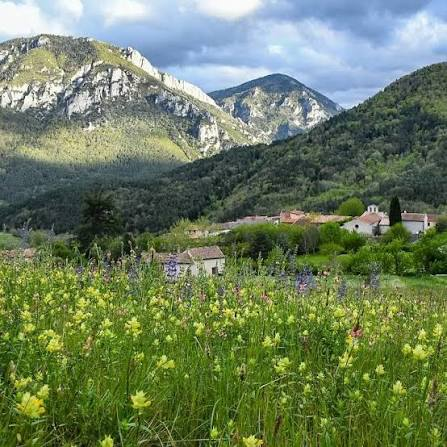

Pyrénées
Audoises


⟹ Sites Naturels & Panoramas ⟸
Les Pyrénées audoises forment l'extrémité montagneuse du sud-ouest de l'Aude, aux confins de l'Ariège et des Pyrénées-Orientales. Leur cœur historique est le Pays de Sault, ensemble de plateaux, forêts, pâturages et vallées suspendues au-dessus de la haute vallée de l'Aude. Ce territoire n'est pas seulement une unité de relief : il possède une identité ancienne, forgée par l'isolement relatif, les échanges avec les régions voisines et une longue histoire politique propre.
Le nom « Sault » est généralement rapproché du latin saltus, terme pouvant désigner un espace boisé et pastoral, mais aussi un territoire de passages, de défilés et de reliefs. Ces deux sens correspondent remarquablement au pays : de vastes forêts y alternent avec des zones de pacage, tandis que cols, gorges et vallées commandent depuis des siècles les communications entre l'Aude, l'Ariège, le Donezan, le Capcir et les hautes terres catalanes.
Le relief résulte de la longue formation des Pyrénées. Les plateaux calcaires et les massifs environnants ont été soulevés, fracturés puis profondément entaillés par les cours d'eau. L'Aude et ses affluents ont creusé des gorges spectaculaires, dont le défilé de Pierre-Lys, longtemps obstacle majeur aux communications. Cette géographie explique à la fois l'isolement de certains villages et la valeur stratégique des rares passages naturels.

Le Pays de Sault apparaît très tôt dans les sources médiévales. Au IXe siècle, il appartient au comté de Razès, vaste ensemble carolingien. Un acte de 845 mentionne les droits du comte Argila du Razès sur le Sault. L'abbaye Saint-Jacques de Joucou, attestée au IXe siècle, joue ensuite un rôle important dans l'organisation religieuse et foncière du secteur. À la fin de l'époque carolingienne, les équilibres politiques évoluent et le pays passe sous l'influence des comtes de Cerdagne puis de Besalú.
Au XIIe siècle, les seigneurs locaux se trouvent dans l'orbite des Trencavel, puissants vicomtes du Midi. Le Sault forme une vicomté dont Niort, aujourd'hui Niort-de-Sault, constitue le centre seigneurial. La famille de Niort devient l'une des grandes familles de cette montagne. Châteaux, tours et positions fortifiées contrôlent les accès aux plateaux et témoignent d'une société féodale organisée autour de lignages puissants.
Le catharisme marque profondément l'histoire du pays. Plusieurs membres de la noblesse locale protègent ou soutiennent des croyants et religieux cathares. Après le déclenchement de la croisade contre les Albigeois en 1209, les seigneurs de Niort résistent longtemps à l'avancée du pouvoir capétien. Le relief difficile du Pays de Sault, ses forêts et ses forteresses offrent des possibilités de refuge qui prolongent cette résistance bien après la chute de nombreux autres bastions languedociens.
La résistance des Niort s'achève au milieu du XIIIe siècle. Niort-de-Sault tombe en 1255, et la monarchie française impose progressivement son autorité sur la région. Cette date est symbolique : elle intervient peu après la chute de Quéribus et à la veille d'une réorganisation durable des frontières méridionales du royaume. Le Pays de Sault entre alors plus fermement dans les structures administratives et politiques du Languedoc royal.
Pendant les siècles suivants, la vie quotidienne repose surtout sur les ressources de la montagne : élevage, pâturages, bois, cultures adaptées à l'altitude et usages collectifs des forêts. Les communautés villageoises défendent jalousement leurs droits d'usage, indispensables à leur survie. L'habitat groupé, les granges, les chemins, les murets et les clairières racontent encore cette économie agro-pastorale. La pomme de terre prendra plus tard une place importante dans les productions du plateau.
Le désenclavement est lent. Jusqu'à l'époque moderne, les gorges de l'Aude rendent les déplacements difficiles vers Quillan et la plaine. L'aménagement progressif des routes transforme les échanges et rapproche les plateaux de la haute vallée. Le spectaculaire défilé de Pierre-Lys, porte naturelle de la vallée de l'Aude, devient l'un des symboles de cette conquête des reliefs par les voies de communication.
Au XIXe siècle, l'intégration administrative et économique du Pays de Sault au reste du département s'accélère, mais les communautés conservent une forte identité. L'État, les nouvelles routes, l'école, l'administration forestière et les transformations de l'agriculture modifient progressivement les équilibres anciens. Le recul du pastoralisme et l'exode rural favorisent à terme l'extension des surfaces boisées, donnant au paysage actuel son caractère très forestier.
La Seconde Guerre mondiale constitue un autre chapitre majeur. Les forêts épaisses, le relief difficile et la proximité des Pyrénées font du secteur un terrain favorable aux réseaux clandestins et à la Résistance. Le maquis de Picaussel, installé dans la forêt du même nom, est officiellement constitué en juin 1944 sous le commandement de Lucien Maury. Il rassemble environ deux cents hommes d'origines diverses et bénéficie du soutien d'une partie de la population locale.
Le maquis sert de base de guérilla, de repos et de ravitaillement. Les combats, opérations allemandes et déplacements de maquisards marquent durablement la mémoire locale. Plus largement, la haute vallée et les montagnes voisines sont aussi des espaces de circulation clandestine, dans un contexte où la frontière espagnole relativement proche joue un rôle essentiel pour les évadés, résistants et réseaux de passage.
Après 1945, les Pyrénées audoises connaissent les grandes transformations des campagnes de montagne : baisse de la population, mécanisation, recul de certaines activités agricoles, fermeture de services et développement du tourisme. Les sports de nature, la randonnée, les activités forestières et la valorisation du patrimoine deviennent progressivement des éléments importants de l'économie locale. Quillan demeure la principale porte d'accès depuis la vallée, tandis que Belcaire, Espezel, Roquefeuil et les autres villages du plateau conservent l'identité du Pays de Sault.
Aujourd'hui, le territoire se distingue par ses vastes forêts, ses pâturages d'altitude, ses gorges et une faible densité de population qui a permis de préserver de grands espaces naturels. Son identité associe héritage médiéval, mémoire cathare, traditions agro-pastorales, histoire de la Résistance et culture montagnarde. Les Pyrénées audoises apparaissent ainsi comme un pays de passage et de refuge, longtemps périphérique mais toujours placé au croisement de plusieurs mondes : Languedoc, Ariège, Pyrénées catalanes et haute vallée de l'Aude.
Pic de Bugarach : point culminant des Corbières, visible depuis les hauteurs de Belcaire.
Plateau de Sault : vaste étendue agricole d'altitude qui prolonge le territoire vers le sud.
Ariège toute proche : col des Sept Frères, porte naturelle vers le département voisin.
Quillan : ville-porte du territoire, animée par ses commerces et ses activités d'eaux vives.